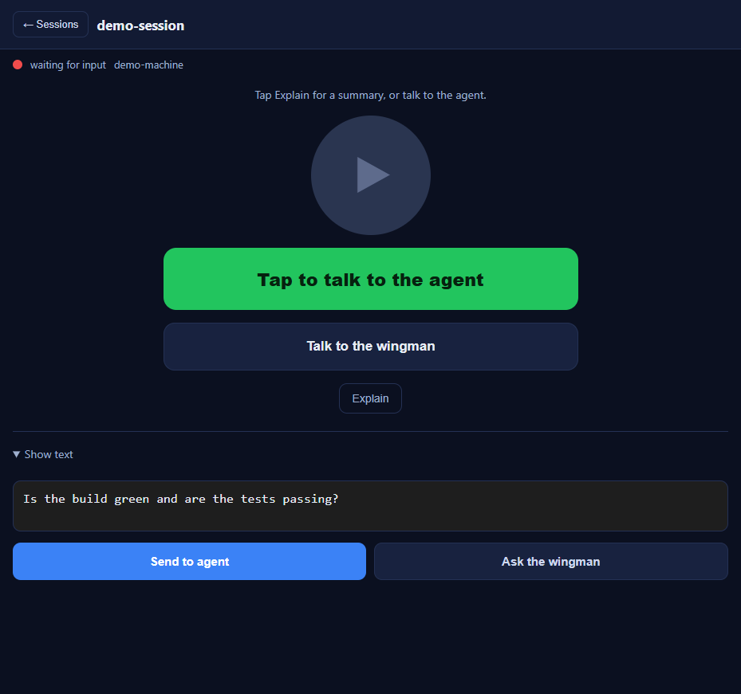
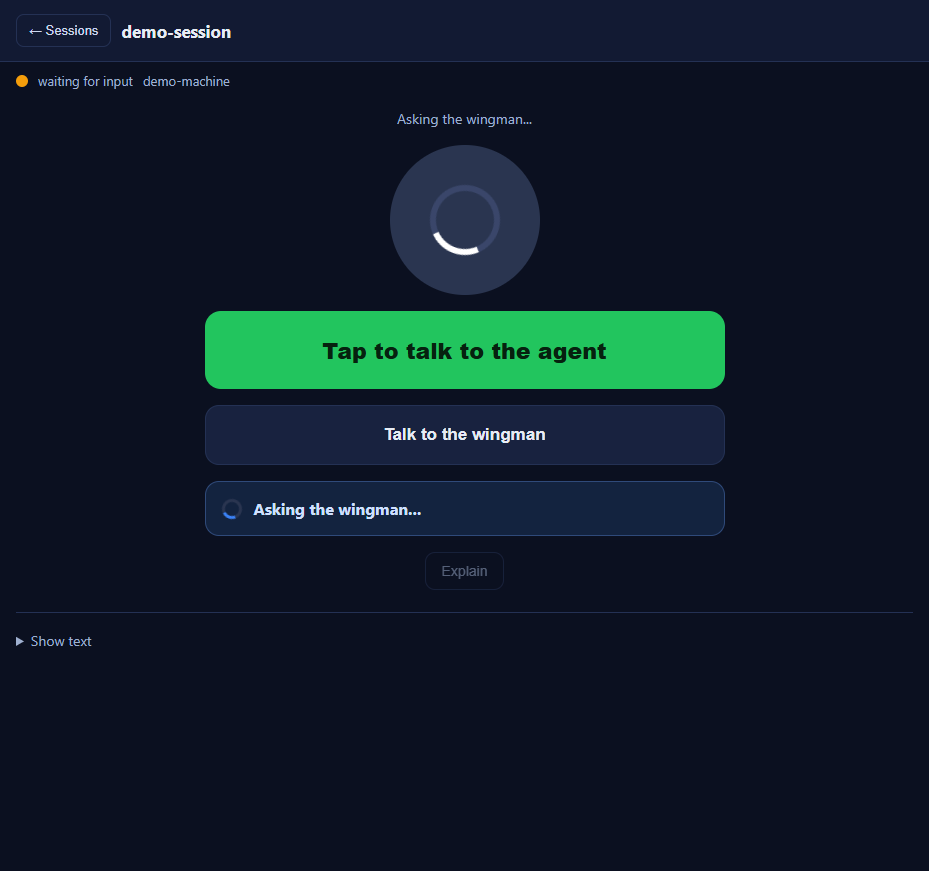
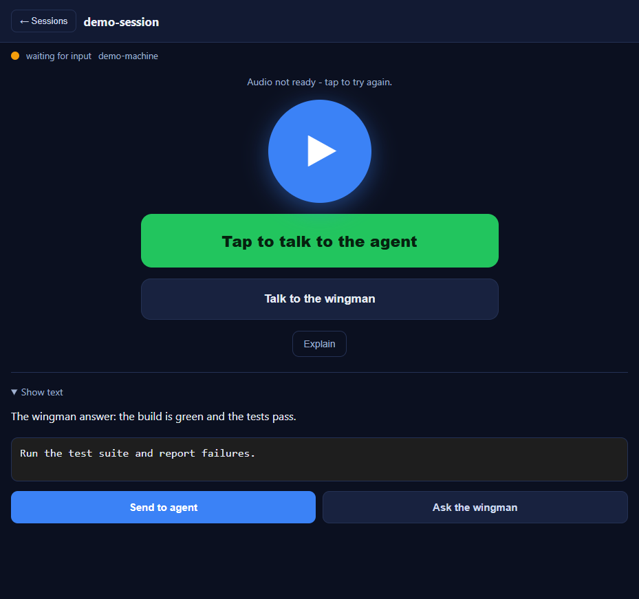
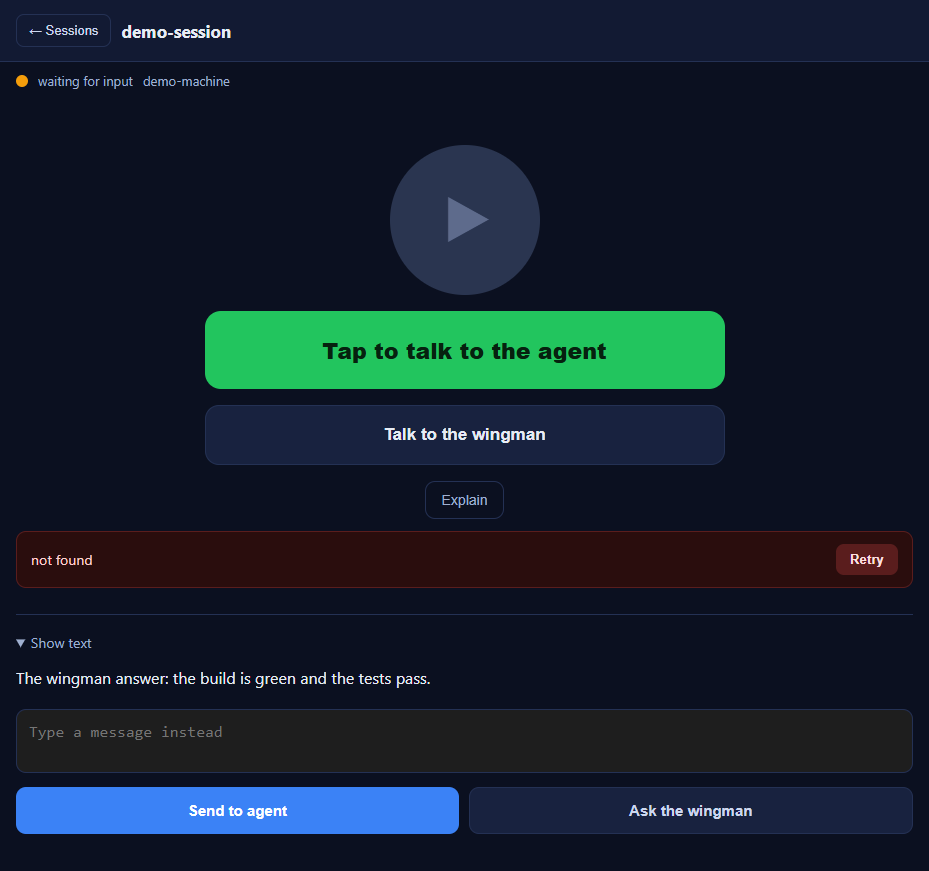
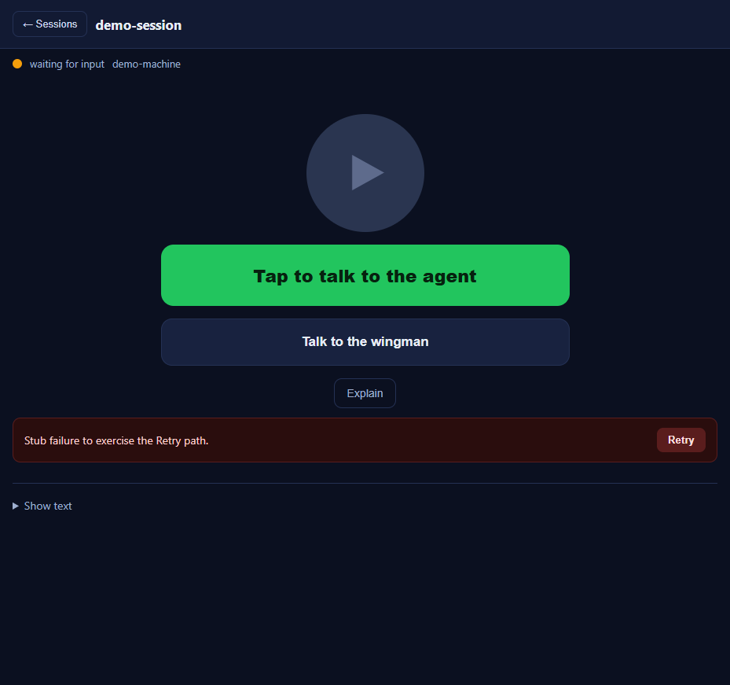

Title: [Voice] /m/ text send (agent + wingman): clear textbox on tap and show sent + working state
Container: cockpit (CcDirector.Cockpit) - static mobile page assets under
wwwroot/m/. Client-only; no server-side change.
t and passed through, so a Retry re-sends it.<details id="text-section"> panel is
collapsed (collapseTextSection()), which brings the top status row
(#hero-status + the #busy-bar "Asking the wingman..." indicator) into view
without the user scrolling. The in-progress indicator persists until the answer arrives, then is
replaced by the rendered wingman answer.#busy-bar (only heroReady/heroFailed did,
and the direct-wingman path calls neither). Added busyBar.classList.add("hidden") on
success so there is no stuck "working" indicator after the answer renders.index.html (the
?v= query on both assets and the on-screen v15 label), and the service
worker sw.js (cache name wingman-voice-v15 and its pre-cached SHELL), so the
new bundle is fetched and the old cache is purged on activate.src/CcDirector.Cockpit/wwwroot/m/m.jssrc/CcDirector.Cockpit/wwwroot/m/index.htmlsrc/CcDirector.Cockpit/wwwroot/m/sw.js| Criterion | Expected | Actual (observed) | Result |
|---|---|---|---|
| Send to agent clears textarea on tap (~100 ms, before the turn completes) | #typed-text is empty immediately after tap |
Read directly after the tap: typedAfterTap="". Screenshot 05 shows the empty box
(placeholder "Type a message instead"). |
PASS |
| Ask the wingman clears textarea on tap | #typed-text empty within ~100 ms of tap |
Read directly after the tap: typed="" (screenshots 01 -> 02). |
PASS |
| Empty/whitespace tap does NOT clear or send; shows the existing prompt | "Type or record something first." (agent) / "Type a question first." (wingman); value preserved | Whitespace value " " preserved; agent showed "Type or record something first.",
wingman showed "Type a question first." No POST sent. |
PASS |
| (Wingman) "sent" + "working" visible from the bottom text section without scrolling | Indicator visible where the user is, no scroll | Panel collapsed on tap (text-section.open=false); #busy-bar visible
(busyHidden=false) with "Asking the wingman..." - screenshot 02. |
PASS |
| (Wingman) in-progress indicator persists, then replaced by the answer - no stuck indicator | busy-bar while in flight; gone on success; answer rendered | In flight: busyHidden=false. After answer: busyHidden=true,
hero-summary = "The wingman answer: the build is green and the tests pass." -
screenshot 03. |
PASS |
| (Wingman) failure shows error + Retry; Retry re-sends the ORIGINAL typed text | Error + Retry; original text not lost by the early clear | Stub 500 -> error "Stub failure to exercise the Retry path." + Retry (screenshot 06). The proof
server recorded BOTH the first send and the Retry as
{"text":"ORIGINAL-WINGMAN-TEXT-12345"}. |
PASS |
| Cache-bust version incremented | v14 -> v15 in html/css/js query, on-screen label, and service worker | Served index.html shows m.css?v=15, m.js?v=15, label
v15; sw.js cache wingman-voice-v15. |
PASS |
wwwroot/m/ as plain static files (the page calls the Gateway's REST same-origin); the
Director Control API does not serve /m/. The EXACT edited m.js/index.html/m.css
files were served verbatim by a small static + stub HTTP harness that answers the two endpoints the page
calls (/sessions and /wingman/ask-direct), so the wingman send path could be
driven end to end in a real browser (cc-playwright, trusted events). The served bundle was confirmed to
carry v15 and the busy-bar fix. The slot-13 Director (built from this worktree) confirmed the Control API
does not serve /m/ (404), establishing where the asset is hosted.





No drift. This is a client-only static mobile-asset behaviour change (timing of the textarea clear, the
panel collapse, and a stuck-indicator fix). No .cs files, no architecture, no security posture
change. No docs/cencon/ update required.
Full solution: dotnet build cc-director.sln reports 0 code errors - the only
build errors are the pre-existing repo-wide NU1903 NuGet-audit warnings-as-errors on a
transitive SQLitePCLRaw.lib.e_sqlite3 2.1.10 package, identical on main and
unrelated to this change. With that pre-existing audit policy set aside the solution builds
0 Warning(s), 0 Error(s), and the slot-13 Director exe built and launched cleanly.
I believe this is finished.